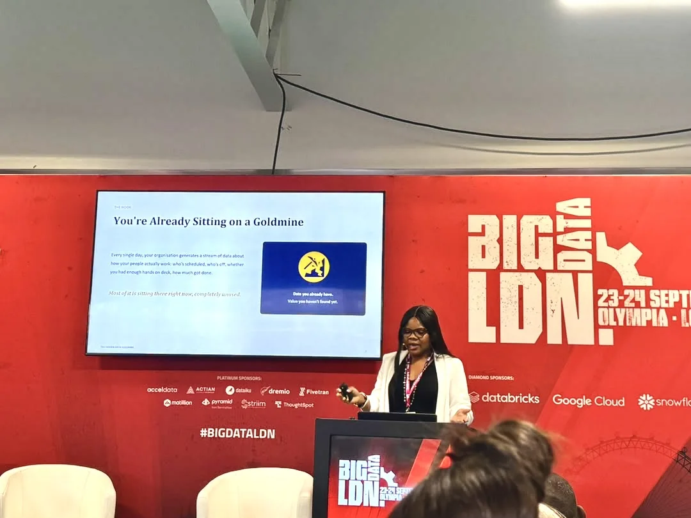
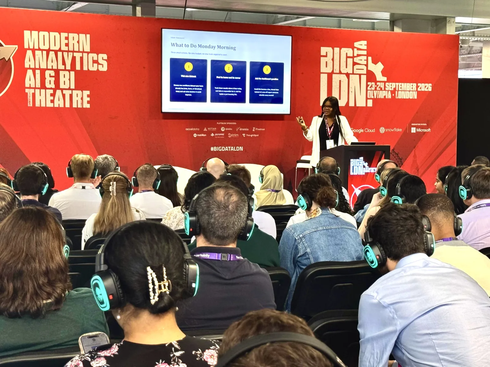
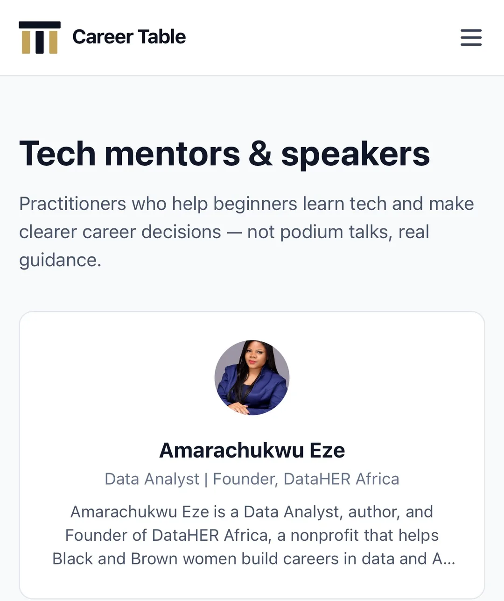
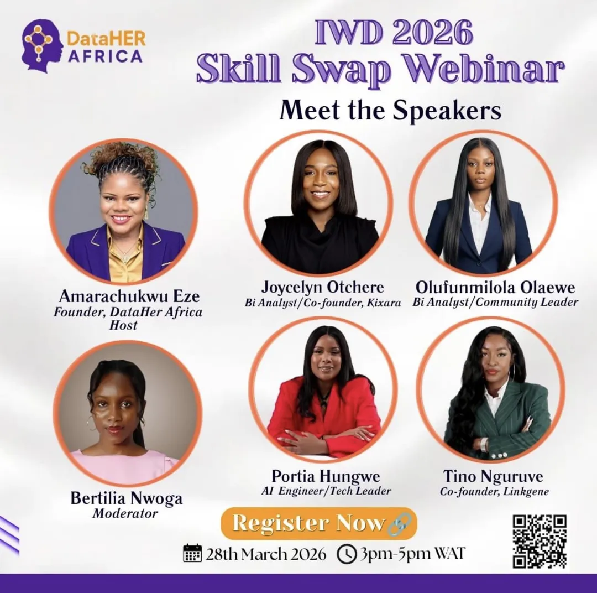
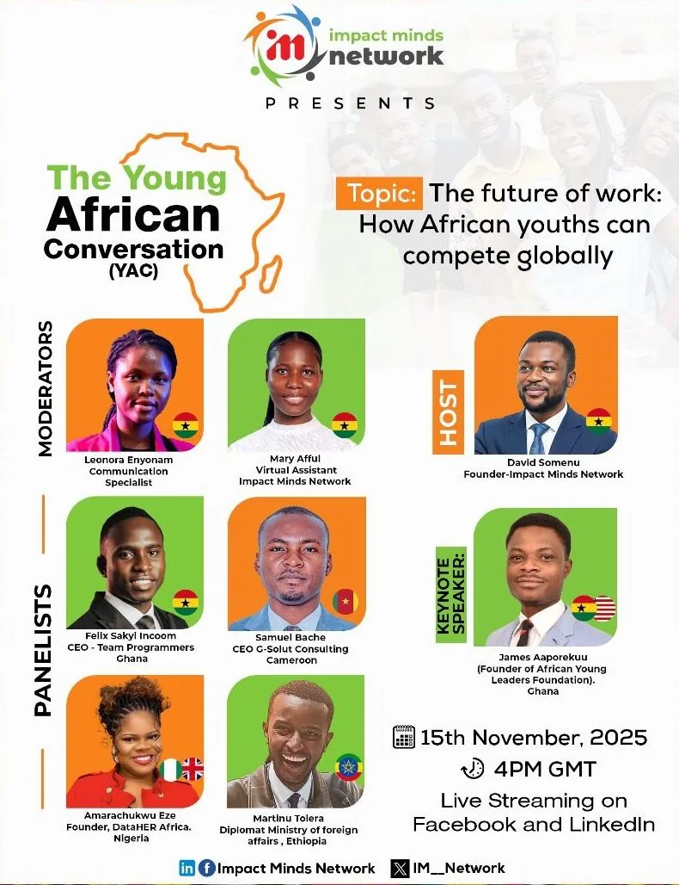
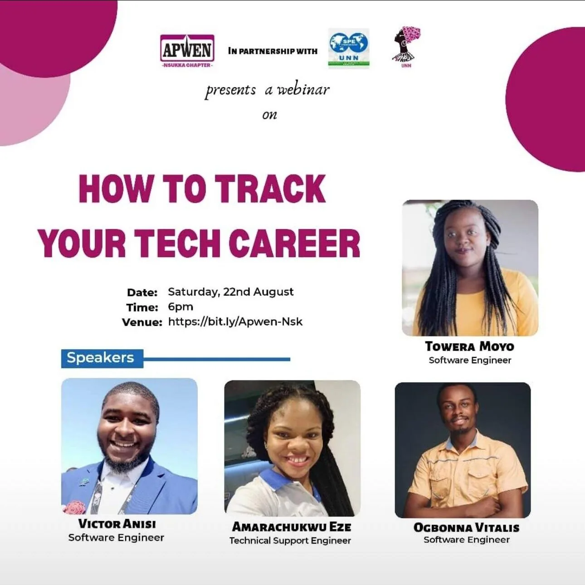

Mic in hand 🎤
Talks & panels
Data, AI, leadership and careers in tech, at conferences, panels, webinars and community events.

On stage · Big Data LDN 2026

Big Data LDN 2026
The Hidden Data Goldmine: turning workforce data into strategic business insights.
Session page ↗
Career Table · Session 001
Data analytics & personal finance.
Session page ↗
IWD 2026 Skill Swap Webinar
An International Women's Day webinar I hosted for DataHER Africa.
Daring Greatly book review
A Women's Day review of Brené Brown's Daring Greatly, as a winner of the IWD 2026 #iRead2Give2Gain Challenge.

The Young African Conversation
The future of work: how African youths can compete globally.

Bold Stories, Big Shifts
A creative journey into tech, a webinar on the Winning Ways Podcast.

How to Track Your Tech Career
Topics
What I speak about
- Data & AI leadership
- Workforce Data Analytics
- Women in data & technology
- Leadership & career growth
- Inclusive innovation
- Building communities in tech
Speaking
Planning an event?
Conference, panel, webinar or community event: tell me what you're planning and let's make it brilliant.